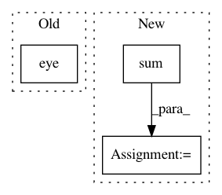

ac24bfe744774df11dfc075397970c75e0fc5206,geomstats/geometry/lie_algebra.py,MatrixLieAlgebra,orthonormal_basis,#MatrixLieAlgebra#Any#,166
Before Change
basis : array-like, shape=[dim, n, n]
Orthonormal basis.
metric_matrix = self.reshape_metric_matrix(metric_matrix) + gs.eye(
self.n)
return self.basis / gs.sqrt(2 * metric_matrix)
def projection(self, mat):
Project a matrix to the Lie Algebra.
After Change
Orthonormal basis.
metric_matrix = self.reshape_metric_matrix(metric_matrix)
norms = gs.sum(
metric_matrix * self.basis * self.basis, (-2, -1))
return gs.einsum("i, ikl->ikl", 1. / gs.sqrt(norms), self.basis)
def projection(self, mat):
In pattern: SUPERPATTERN
Frequency: 4
Non-data size: 3
Instances
Project Name: geomstats/geomstats
Commit Name: ac24bfe744774df11dfc075397970c75e0fc5206
Time: 2020-11-17
Author: nicolas.guigui@inria.fr
File Name: geomstats/geometry/lie_algebra.py
Class Name: MatrixLieAlgebra
Method Name: orthonormal_basis
Project Name: bashtage/linearmodels
Commit Name: 030fd1ceec2b42c580d0a79c8a256c5114a59dc3
Time: 2018-09-10
Author: kevin.k.sheppard@gmail.com
File Name: linearmodels/system/covariance.py
Class Name: HeteroskedasticCovariance
Method Name: __init__
Project Name: pymc-devs/pymc3
Commit Name: 66d22e8e91792efc7af482c1f1bad60ac3447397
Time: 2008-01-29
Author: anand.prabhakar.patil@15d7aa0b-6f1a-0410-991a-d59f85d14984
File Name: pymc/sandbox/test_Gibbs.py
Class Name: test_Gibbs
Method Name: check_GammaNormal
Project Name: nipy/dipy
Commit Name: 660c5515a6534fcaa2284764df65c04bcebc472f
Time: 2015-09-14
Author: mauro.zucchelli88@gmail.com
File Name: dipy/reconst/mapmri.py
Class Name: MapmriModel
Method Name: fit